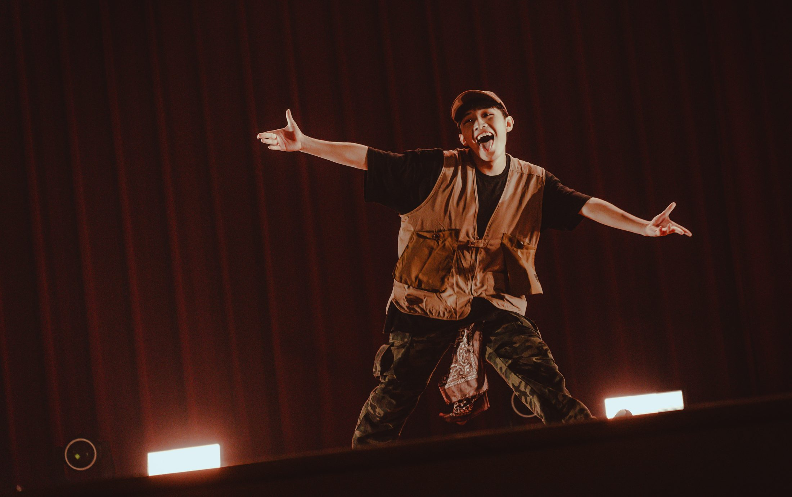
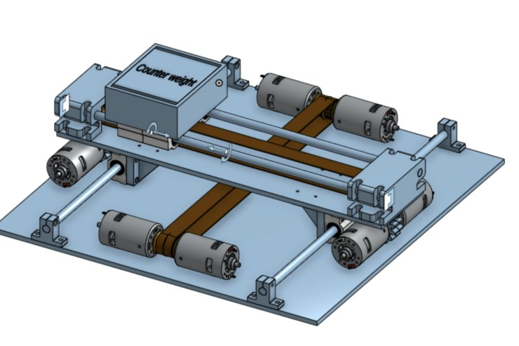
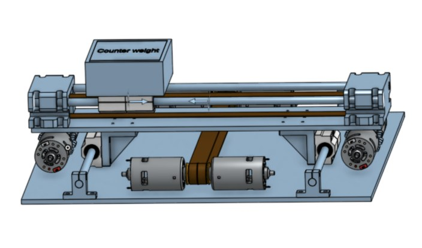
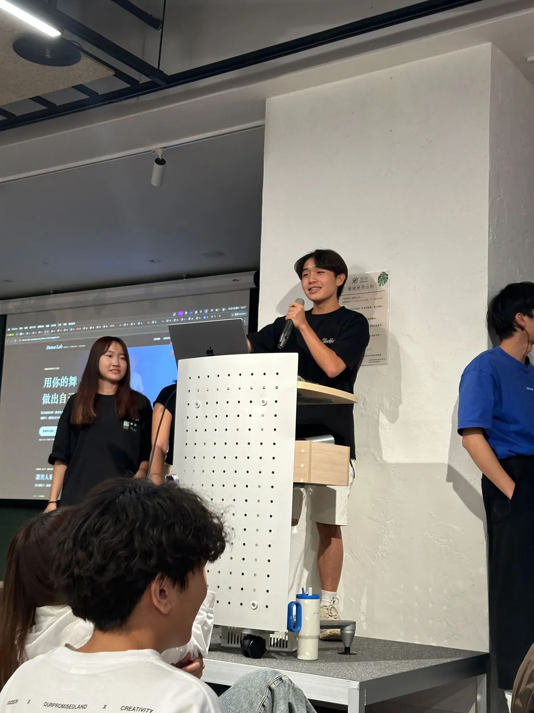
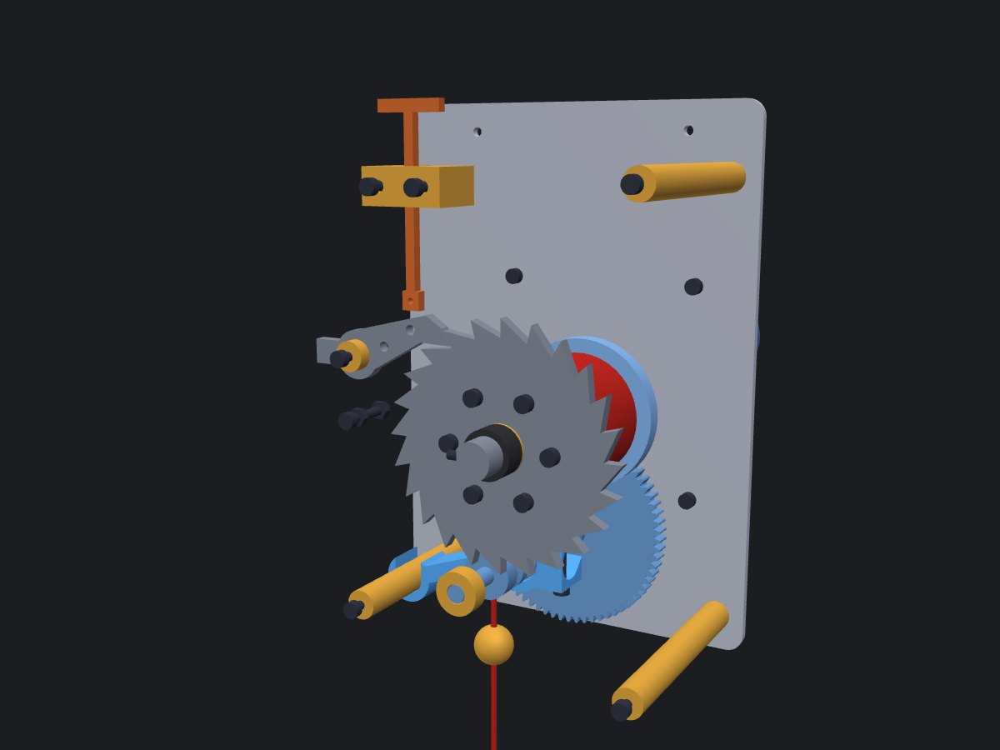
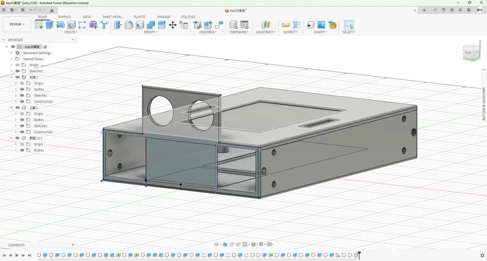
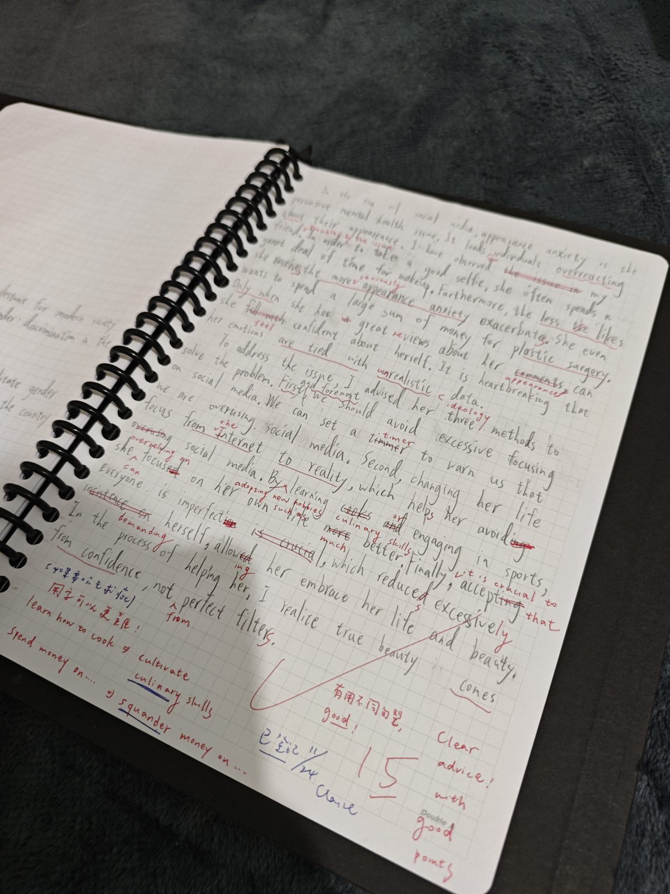
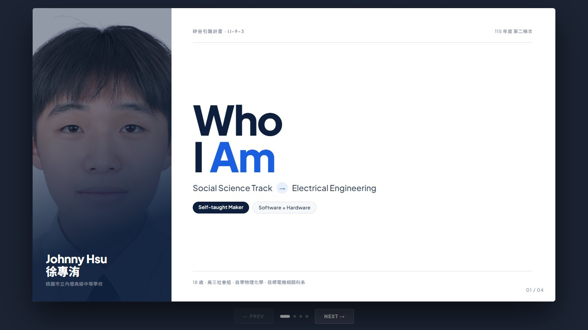
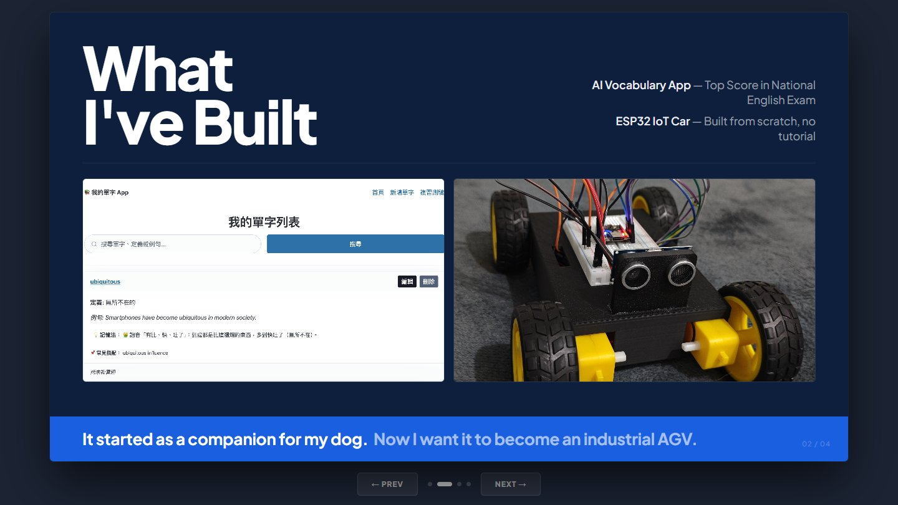

Building
I kept forgetting vocabulary, so I wrote WordMemo. Competition and scholarship notices at school were scattered everywhere, so I built CYCU Opportunity Radar. On the hardware side: an ESP32 car and 3D printing.

Program
徐專洧 · Johnny · Intelligent Computing and Big Data, Chung Yuan Christian University · Minor in Electrical Engineering
Tonight's program hover to light it up, click for details
I start from problems I run into myself, and turn ideas into things you can see and use
CUE 00 / 00Move the spotlight. When it lands on something, click it
I kept forgetting vocabulary, so I wrote WordMemo. Competition and scholarship notices at school were scattered everywhere, so I built CYCU Opportunity Radar. On the hardware side: an ESP32 car and 3D printing.
Events and teaching officer of my high school dance club. I taught choreography and ran the annual showcase — when our venue fell through, I found a new one and the show went ahead.
Hosted an exchange event for a visiting Danish school, entirely in English. Now class representative and a NUVA Campus Ambassador.
Edited videos for graduation and club fairs, and make my own short videos.
Newest first. Click any item to open it.DoneOngoingDidn't work out
Selected for my program's overseas visit to Ho Chi Minh City.
I applied with my image-recognition project and video editing work, and was selected for the program's overseas visit.
I'll cut the trip into a video for my YouTube portfolio.

Hosted by the CYCU Career Development Office.

Hosted by Tunghai University and the National Museum of Natural Science. We built a lander from scratch and finished the competition.
The frame is 3D printed. We wrote our own quadcopter flight controller on an ESP32, and added an ESP32 camera that reads AprilTags on the ground so the craft can find its landing spot on its own.
My teammates and I designed the landing approach together, and took it from nothing to a finished run on competition day.


Compared the quantum algorithm RQAOA with classical methods on 116 problem instances. The research is public on GitHub.
I wanted to know whether RQAOA can actually beat ordinary computers on real scheduling problems. I tested paint-shop color changes, MAX-k-CUT, 3-coloring and Wi-Fi channel planning — 116 instances in total.
On paint-shop scheduling, RQAOA beat a dedicated classical method by about 12–14%, but lost to a stronger tabu search. I wrote up why it lost as a failure analysis.
I also built a Quantum Fit Check that compares quantum and classical methods head-to-head on small business datasets. Both projects are public on GitHub.

Team Salamander. I led the mechanical concept and build.
A counterweight module for warehouse robots. Factories stack loads high, so robots can tip over when they turn, brake or get bumped — most sites just slow them down.
Load cells at the four corners measure force and work out which way the load is about to tip. Belts on the X and Y axes then move a counterweight to compensate. Each axis runs four 775 motors in sync, and the weight moves on PID plus S-curve control so it doesn't shake the robot.
Initial simulation in our 8-page technical report: the module raises the static tipping threshold by about 11–12%. Next up are real tests of the counterweight, response and loaded driving.



A full rewrite of my high school vocabulary site, adding a placement test and a teacher side.
It covers the official 6,000-word high school list. Students can learn, review, spell, and get AI feedback on sentences and essays; teachers can set up classes, assign quizzes and see results. You can try it without signing in.

Pulls notices from 16 public campus sources every day into one searchable site.
Competitions, internships, scholarships, exchanges and talks. There's a deadline calendar, bookmarks and alerts, and you can tell an AI what you're into and let it pick from the notices.
Built with TypeScript, React, Cloudflare D1 and Google sign-in, and installable as a phone app (PWA) with push notifications. In late October I moved the whole thing to Cloudflare, along with 5,000+ records.

My first project was LINE Work Elf, which connects LINE and AI through n8n.
It turns work chats in a group into key points, things to reply to, and next steps, shown on each person's own summary page. It also connects to Google Calendar.

PR team member, currently deputy coordinator for an inter-school exchange event.
The exchange is run jointly by several universities. I work on the proposal and venue seating, and put together discount tags for 48 partner shops.

I designed the mechanism in Fusion 360 over several versions, ending with my own ratchet and gears.
Each version changed the layout and part sizes, and I added phone control with an ESP32-C3. The store-bought winch wouldn't stop on its own, so I replaced it with my own ratchet and gears: a ratchet wheel beside the drum and a pawl that locks it in place. The mechanism is finished.


"Rebuilding the Ground: from image recognition to rapid assessment." I was team captain, working with upperclassmen.
In a conflict, runways are often hit first, and the faster they're repaired the sooner aircraft can fly. Our plan has four steps: drones photograph the runway; YOLO finds the craters (trained with potholes as negative examples to avoid false alarms); 3D Gaussian Splatting rebuilds a model to estimate crater volume; and AI estimates materials and crew and orders the repairs.
We validate it on runway damage simulated in Blender. Advised by Prof. Chen (陳永祥); submitted in October.


Team Ni Hao, Net-Zero & Green Innovation track.
Road repair analysis using image recognition, advised by Prof. Chen (陳永祥).
Wireless remote control, and it steers around obstacles on its own.
I did everything myself: choosing parts, wiring, motor direction, frame layout and power. Control runs over ESP-NOW, and an ultrasonic sensor up front lets it avoid obstacles.
Plenty went wrong along the way: I wired a motor backwards so one side drove forward and the other in reverse, and I underestimated the space for cables and had to rework the switch mount and frame.

A card box and a stationery box.
Printed on my own printer. It's not just pressing print: you have to model it right, keep the room warm enough to stop warping, and measure and reprint when the dimensions are off.


The vocabulary site was the first version of WordMemo.
It combined memory techniques, spaced repetition and AI sentence feedback to fix my own trouble studying English. I later rewrote it as WordMemo.
The chess tool reads PGN files, grades every move and shows the best move where you went wrong. Around the same time I also built a web ordering system.

I chose the humanities track in grade 11, then decided to sit the science exams, teaching myself physics and chemistry.
Humanities taught me to look at technology through markets and needs, but I wanted to solve problems with my own hands, so I switched. I caught up in physics and chemistry with online lessons and a lot of practice problems.
For English, I wrote an essay every day for 30 days before the exam and scored 13/15 (top tier). I also read in English and practiced for the SAT on my own, scoring 1200 on a mock test.

Overseas track. Reached the interview and was 2nd on the waitlist.
My proposal, "Silicon Valley Guide: Google Dream Navigator," planned visits to Google to study AGV systems, and to UCLA's RoMeLa and URIL labs for robotics and computer vision.
I gave the interview presentation in English: how I moved from humanities to engineering, the vocabulary site and the ESP32 car, and a promise to upgrade the car into a small AGV with vision and a robotic arm. Final result: 2nd on the waitlist.


Graduation, travel and interview shorts — 7 videos in the portfolio.
I've edited event videos for graduation and club fairs, and make my own shorts — picking topics, shooting, editing and writing titles. Click a video below to watch.

Taught dance, ran the showcase, booked venues.
In grade 11 I practiced six days a week, with only Sundays off, while also teaching.
For the showcase I handled the proposal, lighting and sound, and the venue layout. The venue we'd booked was suddenly given to another group and the show nearly fell through. I went from office to office, found a new venue on short notice, and the show went on.


English host for a Danish delegation exchange, and my class's representative at the English presentation showcase.
March 2024, co-hosted in English with my classmate William. After the opening we ran a Treasure Hunt: a photo cut into 9 pieces and hidden around the first floor, with a negotiation round at the end for teams to trade pieces.
I prepared the run of show, introduced both schools, and linked every segment live in English.
In English presentation class I combined my talk with a dance performance, and my teacher picked me to represent the class at the showcase.

Anything with a link is live — click through and try it.
Why: I kept forgetting the words I studied.
What: A 3-minute placement test finds your level. Each word comes with roots, sound-alikes or a memory story; words you miss come back soon, words you know come back later. AI marks your sentences and essays. Teachers can run classes, set quizzes and track progress.
Now: Live. Works on your phone, no sign-in needed to try it.
Why: Competition, internship and scholarship notices were spread across a dozen school websites.
What: It collects them every day into a searchable list and deadline calendar with bookmarks. Tell the AI your interests and experience and it recommends notices that fit. Runs on Cloudflare.
Now: Live and still growing.
Why: Group chats run to hundreds of messages, and the actual to-dos get buried.
What: n8n connects LINE and AI to turn work chats into key points, replies needed, and next steps.
Now: My first NUVA Campus Ambassador project. Free to try.
Why: After a game I wanted to know exactly where I lost it.
What: Upload or paste a PGN and step through the game. Every move is graded from brilliant to blunder, mistakes show the best move, and you get an estimated rating for both players.
Now: I use it after my own games.
Why: I wanted to make something physically move.
What: ESP32, motors and an ultrasonic sensor, from breadboard to chassis, with wireless control over ESP-NOW.
Now: Done. It drives by remote and avoids obstacles on its own.
What: Event videos for graduation and club fairs, plus shorts like the Paris × NCCU series and a Thai hotel tipping test.
The ones that didn't go my way, and what I did next.
Youth Overseas Dream Program2nd on the waitlist
I spent a long time on the overseas tech exchange proposal and made the interview, but missed by one place. The videos I'd planned to shoot abroad went with it.
What I did: I didn't wait for a trip. I started making short videos right away — topics, shooting, editing, publishing.
Quantum competitionNo quantum advantage found yet
On paint-shop scheduling RQAOA beat a dedicated classical method by about 12–14%, then lost to a stronger tabu search. 3-coloring and Wi-Fi channel planning didn't show an advantage either.
What I did: I wrote up the comparison and why it fell short, and built a Quantum Fit Check so others can test whether their problem suits quantum methods.
Cable winchThe store-bought winch wouldn't stop
In early November I tested an off-the-shelf winch. It couldn't stop at a set point, which made it useless for what we needed.
What I did: I designed my own ratchet and gears, and the winch is finished.
Click to enlarge.
Click a photo to enlarge.